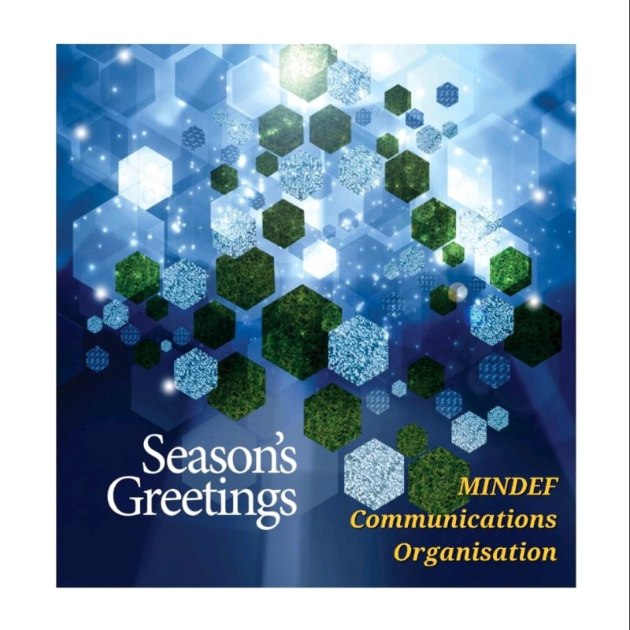

Public trust, narratives and the information environment.
Start with a short explainer. Each paper then offers a reader-friendly analysis and summary; the complete paper can be downloaded if you want the source text, tables and references.
Choose your depth.
Quick take first. Deeper analysis next. Complete paper when you need it.
Proactive Evidentiary Communication
Quick take: communicate early without flattening uncertainty or policy disagreement into “disinformation”.
Explore the analysis & summary →Complete formatted paper available to download. Policy paper · 2026Before the Proof
Quick take: protect people in the first hour without pretending an unverified claim has already been proved or disproved.
Explore the analysis & summary →Complete formatted paper available to download. Policy paper · 2026Proactive Truth in Contested Policy Environments
Quick take: distinguish falsehood from incomplete framing, uncertainty and legitimate disagreement before choosing a public response.
Explore the analysis & summary →Complete web edition available to download.
Seizing the narrative in a global information war
An examination of President Volodymyr Zelenskyy's media communication strategy in the first 100 days of Russia's invasion of Ukraine.
Read at Emerald →